(Optional) Module 13 - Guided Lab 1: Breaking a Monolithic Node.js Application into Microservices
Lab overview and objectives
Traditional monolithic architectures can be difficult to scale. As an application's code base grows, it becomes complex to update and maintain. It can be difficult and complicated to introduce new features, languages, frameworks, and technologies, which can then limit innovation and new ideas.
In a microservices architecture, each application component runs as its own service. They are built around business capabilities, and each service performs a single function. Microservices can be written by using different frameworks and programming languages, and they communicate with other services via a well-defined application programming interface (API). Finally, you can deploy them independently—as a single service, or as a group of services.
In this optional lab, you will migrate a monolithic application that runs in a standard Node.js server to a containerized Docker environment. You will then refactor the application into microservices and deploy it to a containerized environment that is orchestrated by Amazon Elastic Container Service (Amazon ECS). The Node.js application implements the functions of a simple message board where users can create topic threads, and post messages on each thread.
After completing this lab, you should be able to:
- Migrate a monolithic Node.js application to run in a Docker container
- Refactor a Node.js application from a monolithic design to a microservices architecture
- Deploy a containerized Node.js microservices application to Amazon ECS
The following diagram illustrates the evolution of the application's design as it moves from monolithic to microservices-based.
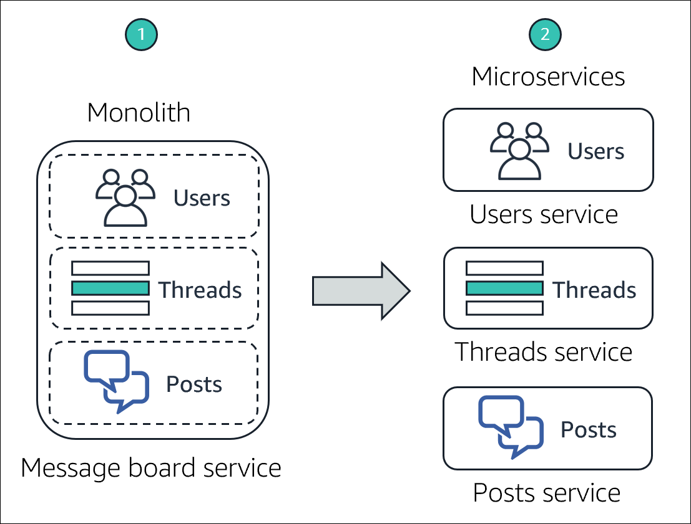
The diagram highlights the following differences between the monolithic approach and the microservices design:
- In a monolithic design, all the functions of the Node.js application are packaged and run as a single service. If one function fails, the entire application fails. Likewise, if one application function experiences a spike in demand, all functions in the service must be scaled together.
- In a microservices architecture, each function of the Node.js application runs as a separate service. The services can scale and be updated independently of each other.
Duration
This lab requires approximately 3 hours to complete.
AWS service restrictions
In this lab environment, access to AWS services and service actions might be restricted to the ones that are needed to complete the lab instructions. You might encounter errors if you attempt to access other services or perform actions beyond the ones that are described in this lab.
Accessing the AWS Management Console
At the top of these instructions, choose Start Lab to launch your lab.
A Start Lab panel opens, and it displays the lab status.
Tip: If you need more time to complete the lab, restart the timer for the environment by choosing the Start Lab button again.
Wait until the Start Lab panel displays the message Lab status: ready, then close the panel by choosing the X.
At the top of these instructions, choose AWS.
This action opens the AWS Management Console in a new browser tab. The system automatically logs you in.
Tip: If a new browser tab does not open, a banner or icon is usually at the top of your browser with the message that your browser is preventing the site from opening pop-up windows. Choose the banner or icon, and then choose Allow pop-ups.
Arrange the AWS Management Console tab so that it displays alongside these instructions. Ideally, you will have both browser tabs open at the same time so that you can follow the lab steps more easily.
Do not change the Region unless specifically instructed to do so.
Task 1: Preparing the development environment
An AWS Cloud9 environment was created for you during the process of creating the lab environment. AWS Cloud9 is a cloud-based integrated development environment (IDE) that you can use to write, run, and debug code on a browser. It comes pre-packaged with essential tools for popular programming languages, and provides access to the AWS Command Line Interface (AWS CLI) in a terminal session tab. Your AWS Cloud9 environment has access to the all the AWS resources that are authorized for the user ID that you used to log in to the AWS Management Console.
To set up your development environment, you will open the AWS Cloud9 IDE, and download and extract the required lab files.
In the AWS Management Console browser tab, expand All services, and then select Developer Tools > Cloud9.
In the Cloud9-IDE card, choose Open IDE
The IDE opens in a new browser tab and displays several tabs, including a Welcome tab.
Next, you will download and extract the required lab files.
In the bottom pane of the IDE, enter the following command in the terminal tab labeled bash - "ip-nnn-nnn-nnn-nnn":
curl -s https://aws-tc-largeobjects.s3.amazonaws.com/ILT-TF-100-TUHAWA-1/lab-four/lab-files-ms-node-js.tar.gz | tar -zxvThis command retrieves a compressed archive file that contains the lab files. It also extracts the file contents in the AWS Cloud9 ~/environment folder. The command output should like the following example:
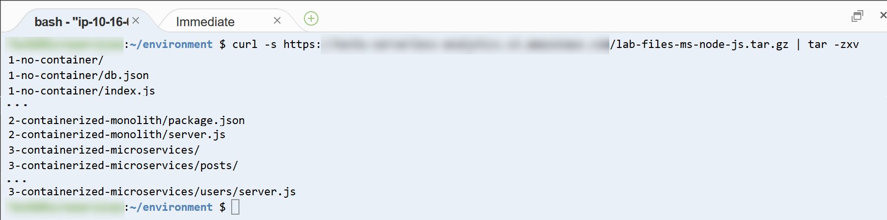
The downloaded and extracted files are visible in the Environment window (in the left pane).
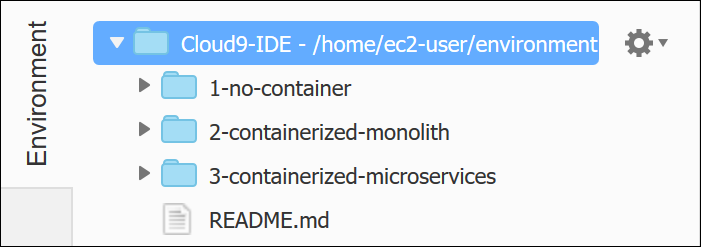
You can see the following folders:
- 1-no-container – Contains the files that are related to the monolithic implementation of the application. This implementation is intended to run directly on a Node.js server.
- 2-containerized-monolith – Contains the files that are related to the monolithic implementation of the application. This implementation is intended to run in a containerized Docker environment orchestrated by Amazon ECS.
- 3-containerized-microservices – Contains the files that are related to the microservices implementation of the application. This implementation is intended to run in a containerized Docker environment orchestrated by Amazon ECS.
Keep the AWS Cloud9 IDE tab opened throughout this lab, because you will use it frequently.
Task 2: Running the application on a basic Node.js server
The base Node.js application is a monolithic service that was designed to run directly on a server, without a container. In this task, you deploy the application to the Node.js server that is installed on the instance running your AWS Cloud9 environment. You then test the application by using the AWS CLI terminal to invoke its RESTful API methods.
The deployment architecture and request flow are illustrated in the following diagram.
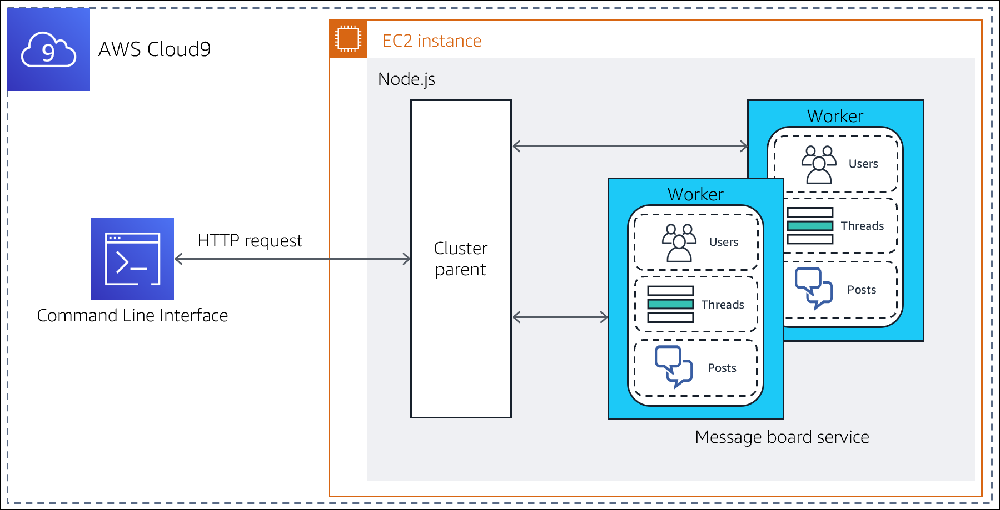
Note: The monolithic implementation of the application uses the Node.js cluster functionality to spawn one worker process per CPU core. The processes share a single port, and are invoked in a round-robin way by the load balancer that is built into Node.js. This feature increases scalability on servers that have multiple CPU cores.
In this task, you will:
- Install the Node.js modules required by the application
- Review the application design and code
- Run the application
Task 2.1: Installing the required Node.js modules
The message board application uses two modules from the Node.js koa framework in its implementation: koa and koa-router. Koa.js is a widely used Node.js web application framework that facilitates building asynchronous server-side JavaScript applications.
In the terminal tab, enter the following commands to install the koa and koa-router modules:
xxxxxxxxxxcd ~/environment/1-no-containernpm install koanpm install koa-router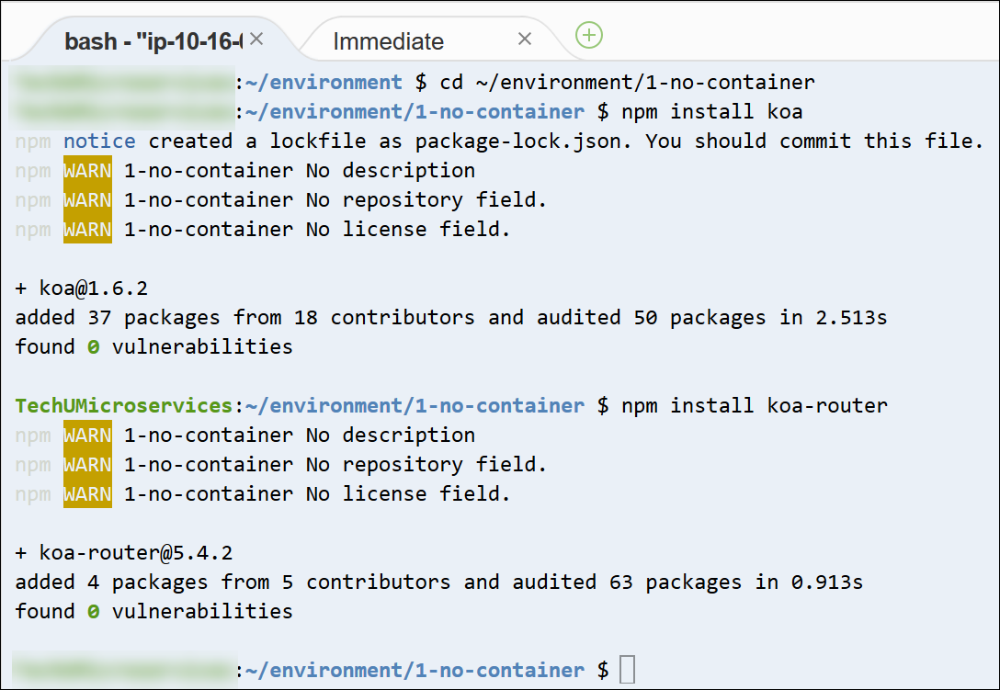
The modules are downloaded and installed in the 1-no-container/node_modules folder of the AWS Cloud9 ~/environment folder. You can ignore the notice, warnings, and update messages in the output.
Task 2.2: Reviewing the application design and code
The components that implement the monolithic message board application are in the 1-no-container folder. Review them to gain an understanding of the application design and code.
In the Environment window on the left, expand the 1-no-container folder. The components of the application include:
- node_modules folder – This folder was created when you installed the required JavaScript modules in the previous subtask. It contains their source code.
- db.json – A JavaScript Object Notation (JSON) object that simulates the message board database. It contains attributes that represent users, threads, and posts, with corresponding sample values.
- index.js – JavaScript program that is the application's entry point.
- package.json – A JSON object that describes the application, its entry point, and its dependencies.
- package-lock.json – A JSON object that was automatically generated when you installed the required JavaScript modules in the node_modules folder. It is used by the installation utility, npm, to track the modifications that are made to the folder.
- server.js – JavaScript program that defines the application's RESTful API methods, and implements their respective handlers.
Examine the package.json object. In the Environment window, open package.json an editor tab by double-clicking it. Notice the following attributes of the JSON object:
- Lines 2 through 5 – The dependencies attribute defines the JavaScript module dependencies for the application. Note that the koa and koa-router modules that you installed in the previous subtask are listed here.
- Lines 6 through 8 – The scripts attribute declares the index.js program as the entry point to the application.
Examine the db.json object. In the Environment window, open db.json in an editor tab by double-clicking it. Notice the following attributes of the JSON object:
Lines 2 through 27 – These lines define a users attribute that represents the registered users of the message board. The attribute value is a list of four sample users with the following names: Marcerline Singer, Finn Alberts, Paul Barium, and Jake Storm.
Lines 29 through 45 – These lines define a threads attribute that represents the current active threads on the message board. The attribute value is a list of three sample threads with the following titles:
- Did you see the Brazil game?
- New French bakery opening in the neighborhood tomorrow
- In search of a new guitar
- Lines 47 through 78 – These lines define a posts attribute that represents the posted messages on the active threads. The attribute value is a list of six sample message posts.
Review the code for index.js. In the Environment window, open index.js in an editor tab by double-clicking it. Notice the following information:
- Lines 1 through 3 – These lines import the JavaScript modules that the program requires, specifically: cluster, http, and os.
- Line 3 – This line uses the os module to ask about the number of CPU cores that are available on the server.
- Lines 5 through 15 – These lines are run the first time the program is invoked (when the application is started). They create a Leader thread for the cluster and one worker thread for each CPU core that is available on the server.
- Lines 16 through 19 – These lines handle each request to the application by invoking the server.js program in the current worker thread.
Lastly, review the code for server.js. In the Environment window, open server.js in an editor tab by double-clicking it. Use the comments that are provided in the code to facilitate your understanding of the logic. In particular, notice the following information:
Line 3 – This line imports db.json, the JSON object that simulates the database.
Lines 6 through 11 – These lines define a generator function that runs for every request. Its purpose is to print a line that contains the HTTP method, resource path URL, and elapsed time for each request that is processed.
Lines 13 through 47 – These lines define the application's RESTful API methods and their implementation. Specifically, the application can respond to the following RESTful calls.
GET /api/users: Returns the collection of users in the databaseGET /api/users/:userId: Returns the information for the user that is identified by :userIdGET /api/threads: Returns the collection of threads in the databaseGET /api/threads/:threadId: Returns the information for the thread that is identified by :threadIdGET /api/posts/in-thread/:threadId: Returns the collection of post messages for the thread that is identified by :threadIdGET /api/posts/by-user/:userId: Returns the collection of post messages for the user that is identified by :userIdGET /api/: Returns the message API ready to receive requestsGET /: Returns the message Ready to receive requests
Line 52 – This line defines the port number where the application listens for requests
Task 2.3: Running the application
In this subtask, you will start the Node.js server and run the message board application. Then, you will test some of its RESTful API methods.
In the terminal tab, start Node.js and the application by entering the following command:
xxxxxxxxxxnpm start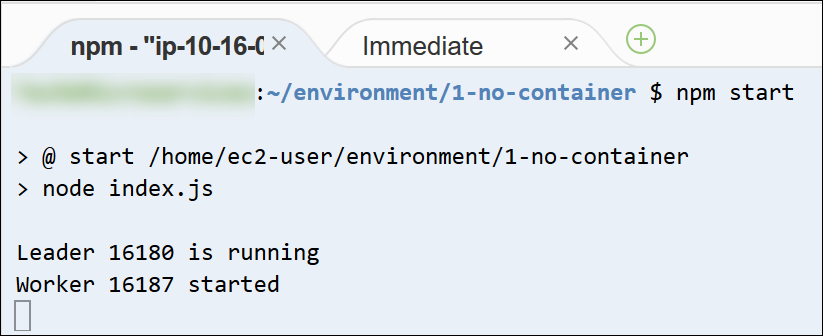
The server is started, and the application's entry point, index.js, is run. The first time that index.js is invoked, it creates two cluster threads—Leader and Worker—to process requests.
Next, you will leave the current terminal session active and open a second terminal tab to test the application's RESTful API.
In the bottom pane, open a new terminal tab by choosing (+) and selecting New Terminal. You now have two terminals where you can enter commands.
In the right terminal tab, retrieve the
/api/usersresource by entering the following command:xxxxxxxxxxcurl localhost:3000/api/usersThe RESTful invocation returns a JSON object that contains the list of users in the message board database.
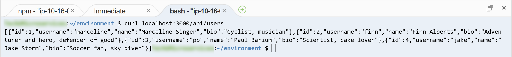
Select the left terminal tab. You see an output message from server.js that it processed a GET method request on the resource, which is identified by the path
/api/users. The request took 4 milliseconds to process.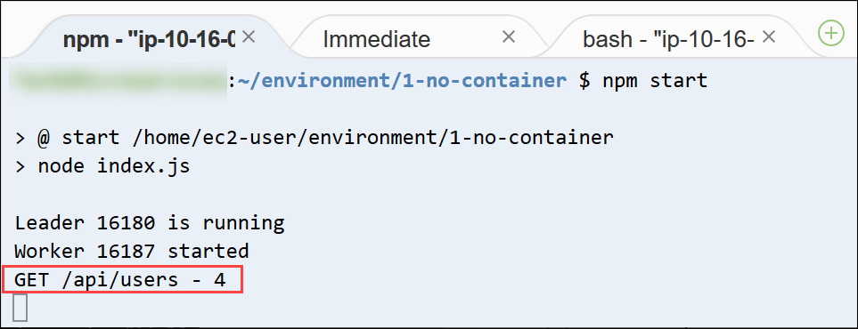
Retrieve the information for only the fourth user in database. In the right terminal tab, enter the following command:
xxxxxxxxxxcurl localhost:3000/api/users/4The information for Jake Storm, the fourth user in the database, is returned:
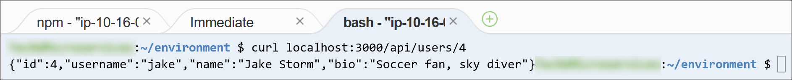
Next, retrieve all the threads that are currently in the database. In the right terminal tab, enter the following command:
xxxxxxxxxxcurl localhost:3000/api/threadsA JSON object that contains all the threads in the database is returned:
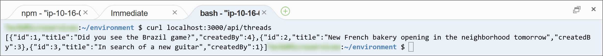
Lastly, retrieve all the posts for the first thread in the database. In the right terminal tab, enter the following command:
xxxxxxxxxxcurl localhost:3000/api/posts/in-thread/1A JSON object that contains two message posts is returned:
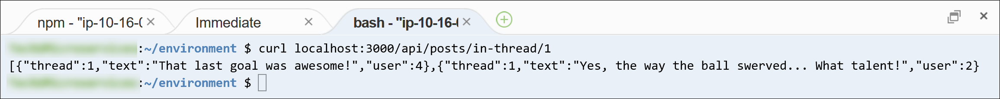
Stop the Node.js server. In the left terminal tab, press CTRL+C to terminate the server process.
You have validated that the application responds properly to GET requests. In the next task, you will containerize the application.
Task 3: Containerizing the monolith for Amazon ECS
Containers wrap application code in a unit of deployment, which captures a snapshot of the code and its dependencies. They can help ensure that applications deploy quickly, reliably, and consistently, regardless of the deployment environment.
In this task, you will build a container image for the monolithic message board application and push it to Amazon Elastic Container Registry (Amazon ECR). This step prepares the application for deployment to Amazon ECS.
Specifically, you will perform the following steps:
- Prepare the application for Docker containerization
- Provision a repository
- Build and push the Docker image to the repository
Task 3.1: Preparing the application for Docker containerization
To put the message board application into a Docker container, the following changes must be made to the application:
- Remove the use of the Node.js cluster feature and convert the application to a single-process design. With Docker containers, the goal is to run a single process per container, instead of a cluster of processes.
- Create a Dockerfile for the application. This file is basically a build script that contains instructions about how to build a container image for the application.
A container-ready version of the application is provided to you in the 2-containerized-monolith folder of your AWS Cloud9 environment. Take a few minutes to review the files and understand the changes that were made to prepare the application for containerization.
In the Environment window on the left, expand the 2-containerized-monolith folder, and open the package.json in an editor tab by double-clicking it.
In Line 7, notice that the entry point into the application was changed from index.js to server.js. The index.js file is no longer in the application folder. The index.js file contained the initialization logic for the Node.js cluster feature, and you will no longer use that feature.
In the Environment window, expand the 2-containerized-monolith folder, and open the server.js file in an editor tab by double-clicking it.
The only difference from the non-containerized version is the addition of Line 54, which prints the message Worker started when the application is first started.
In the Environment window, expand the 2-containerized-monolith folder, and open the Dockerfile in an editor tab by double-clicking it.
This file contains the instructions about how to build the container image for the application.
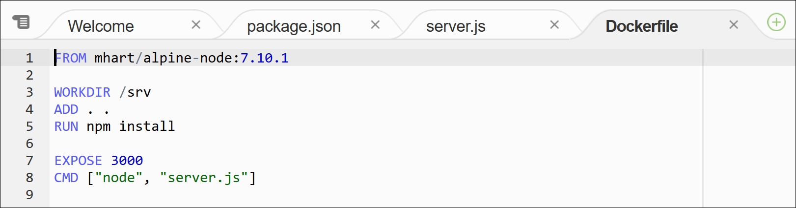
Notice the following information:
- Line 1 – The base image where the container image will be built. Here, it is alpine-node, which is a Node.js image.
- Line 3 – This line sets the working directory of the file system on the image to /srv.
- Line 4 – This line adds the contents of the 2-containerized-monolith folder (the application folder) to the current working directory of the image's file system (which is set in the previous line).
- Line 5 – This line invokes the npm install command to install all the application's library dependencies that were declared in the package.json file.
- Line 7 – This line informs Docker that the container listens on port 3000 when it runs.
- Line 8 – This line asks Docker to run the command node server.js, which starts the application when the image is started.
Now that you understand how the container image for the application will be built, you will next examine where to put the image after it is built.
Task 3.2: Provisioning a repository
Docker container images are intended to be stored in a repository for sharing, version control, and easier management purposes. Amazon ECR makes it easy for developers to store, manage, and deploy Docker container images. In addition, Amazon ECR is integrated with Amazon ECS, which enables Amazon ECS to pull container images directly for production deployments.
In this subtask, you will create a repository in Amazon ECR to house the Docker container image for the message board application.
In the Your environments browser tab, choose Services, and then select Container > Elastic Container Registry.
The Amazon ECR console opens.
In Create a repository, choose Get Started.
In the Repository name box, enter
mb-repo.Choose Create repository.
A message at the top of the page indicates that the repository was successfully created.
Note: Do not close the window that shows the message. You will use it in the next subtask.
Task 3.3: Building and pushing the Docker image
You are now ready to build the container image for the application and push it to the Amazon ECR repository that you created.
One useful feature of the Amazon ECR console is that it provides ready-to-use command templates for building and pushing an image to the new repository. You use these provided AWS CLI commands in the next steps.
Before you can successfully run the next steps, you must upgrade the AWS CLI. To do this, go to the AWS Cloud9 IDE browser tab, and in the left terminal tab, enter the following commands:
xxxxxxxxxxpip3 install awscli --upgrade --userexport PATH=$HOME/.local/bin:$PATHGo back to the Amazon ECR console browser tab, and in the message window at the top of the page, choose View push commands.
The Push commands for mb-repo pop-up window opens. This window lists four AWS CLI commands that are customized for the mb-repo, and they are purposely built to:
- Authenticate your Docker client to your Amazon ECR registry
- Build your Docker image
- Tag your Docker image
- Push your Docker image to the repository
The pop-up window offers two versions of the commands: one for macOS/linux, and one for Microsoft Windows.
Make sure that the macOS/Linux tab is selected, because you will run these commands in your AWS Cloud9 environment.
First, you will copy and run the command to log in your Docker client to your registry.
In the pop-up window, locate the first command and then copy the command to the clipboard by choosing the Copy icon.
The command looks like the following example:
xxxxxxxxxx$ aws ecr get-login-password --region us-east-1 | docker login --username AWS --password-stdin 01234567890.dkr.ecr.us-east-1.amazonaws.com/mb-repoSwitch to the AWS Cloud9 IDE browser tab.
In the left terminal tab, paste the copied command and run it by pressing ENTER:
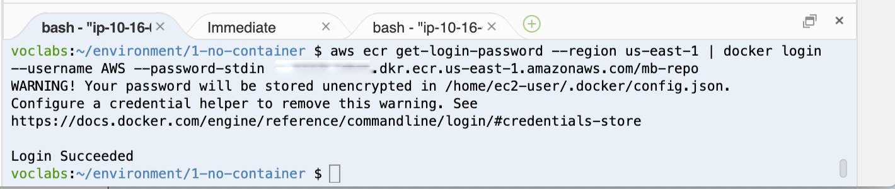
If the command runs successfully, it returns the message Login Succeeded. You can ignore the displayed warnings.
Next, you will build the Docker image for your application.
Note: When a specific terminal tab is not mentioned in an instruction step, use the left terminal tab.
In the terminal tab, change the directory to the 2-containerized-monolith folder by entering the following command:
xxxxxxxxxxcd ~/environment/2-containerized-monolithSwitch to the Amazon ECR console browser tab.
In the Push commands for mb-repo window, locate the second command and copy the command by choosing the Copy icon.
The command looks like the following example:
xxxxxxxxxxdocker build -t mb-repo .Make sure to include the period (.) at the end of the command.
Switch to the AWS Cloud9 IDE browser tab.
In the terminal tab, paste the copied command and run it by pressing ENTER:
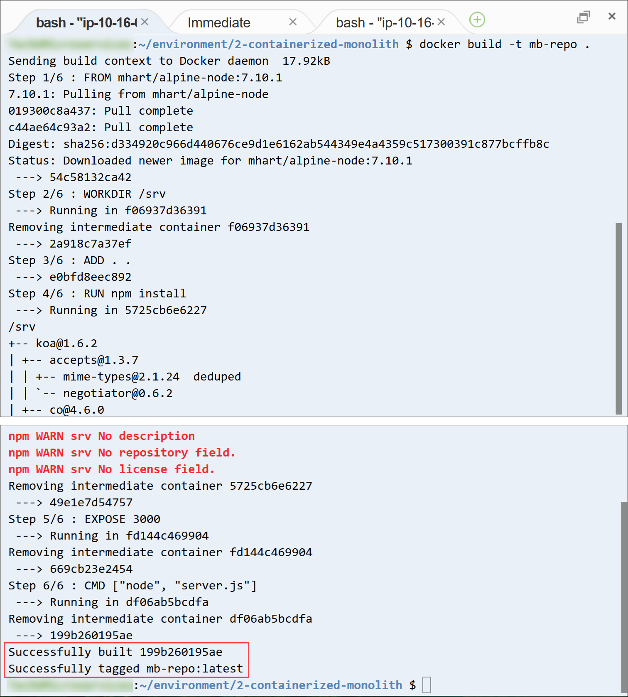
The build command produces multiples lines of output as it runs the instructions that are in the application's Dockerfile. When it is finished, you see the messages Successfully built nnnnnnnnnn and Successfully tagged mb-repo:latest.
Next, you will tag the image with the repository URI so that it can be pushed the repository.
Switch to the Amazon ECR console browser tab.
In the Push commands for mb-repo window, locate the third command and choose the Copy icon.
The command looks like the following example:
xxxxxxxxxxdocker tag mb-repo:latest 1234567890.dkr.ecr.us-east-2.amazonaws.com/mb-repo:latestSwitch to the AWS Cloud9 IDE browser tab.
In the terminal tab, paste and run the copied command:
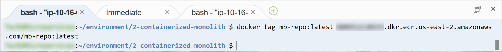
The command does not return anything if it completed successfully.
Finally, you will push the container image to the application's repository.
Switch to the Amazon ECR console browser tab.
In the Push commands for mb-repo window, locate the fourth command and copy it.
The command looks like the following example:
xxxxxxxxxxdocker push 1234567890.dkr.ecr.us-east-2.amazonaws.com/mb-repo:latestSwitch to the AWS Cloud9 IDE browser tab.
In the terminal tab, paste and run the copied command:
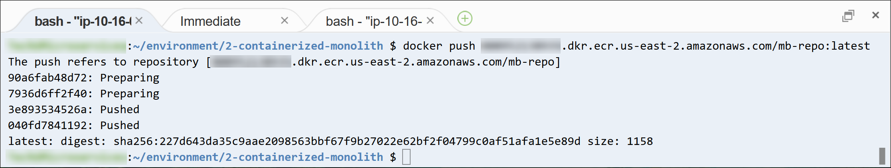
The command outputs several messages as each layer of the image is pushed to the repository.
Next, you will verify that the image was successfully uploaded.
Switch to the Amazon ECR console browser tab.
Close the Push commands for mb-repo window.
In the Repositories list, choose mb-repo.
In the Images list, you should see the container image that you pushed, which you can identify by the latest tag.
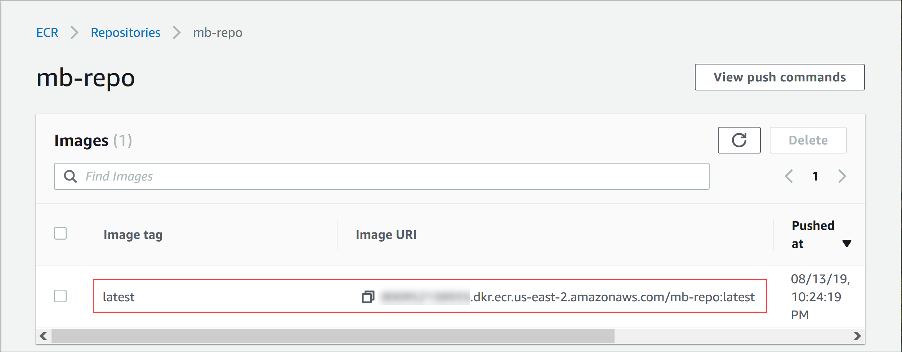
Record the Image URI. In the Images list, locate the Image URI of the latest version of the image, and choose the Copy icon. Paste the value in a text editor. You will use it in a subsequent step.
You have successfully created a container image for the message board application, and you have also pushed it to an Amazon ECR repository.
Task 4: Deploying the monolith to Amazon ECS
In this task, you deploy the containerized monolithic application to an Amazon ECS runtime environment. Specifically, you use Amazon ECS to create a managed cluster of Amazon Elastic Compute Cloud (Amazon EC2) instances. You will deploy your application container image to this cluster. The cluster is configured as the target group of an Application Load Balancer, which will provide failover and scalability.
The following diagram shows the deployment architecture of the containerized monolithic application. It also displays the resources that you will create in this task.
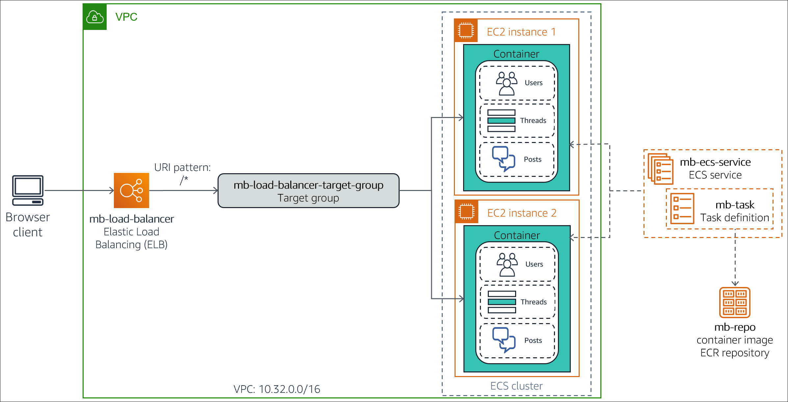
The steps that you perform in this task are:
- Create an Amazon ECS cluster.
- Create a task definition for the application container image.
- Create the Application Load Balancer.
- Deploy the monolithic application as an ECS Service.
- Test the containerized monolithic application.
Task 4.1: Creating an Amazon ECS cluster
An Amazon ECS cluster is a logical grouping of EC2 instances where you can run tasks or services that represent your containerized application.
In this subtask, you will create an ECS cluster by using the Amazon ECS console. The console's cluster creation wizard enables you to create all the infrastructure components that are needed to create the ECS cluster environment. These components include the virtual private cloud (VPC), subnets, security groups, internet gateway, and AWS Identity and Access Management (IAM) roles.
Go back to the AWS Management Console browser tab, choose Services, and then select Containers > Elastic Container Service.
In the navigation pane, choose Amazon ECS > Clusters.
In the Clusters page, choose Create Cluster.
In the Select cluster template page, select the EC2 Linux + Networking card.
Choose Next step.
In the Configure cluster wizard, configure the following settings.
- Cluster name:
mb-ecs-cluster - Provisioning Model: On-Demand Instance
- EC2 instance type: t2.micro
- Number of instances:
2 - VPC: Create a new VPC
- CIDR block:
10.32.0.0/16 - Subnet 1:
10.32.0.0/24 - Subnet 2:
10.32.1.0/24 - Security group: Create a new security group
- Security group inbound rules: Leave it at the default setting, which allows inbound traffic from all IP addresses on port 80.
Note: The message in the Container instance IAM role section states that you are granting permissions to Amazon ECS to create and use the ecsInstanceRole. This role authorizes the EC2 instances in the cluster to invoke Amazon ECS actions.
- Cluster name:
Choose Create.
The Launch Status page opens, and shows the tasks that the wizard performs.
Wait until all tasks have a check mark, which indicates that they are complete.
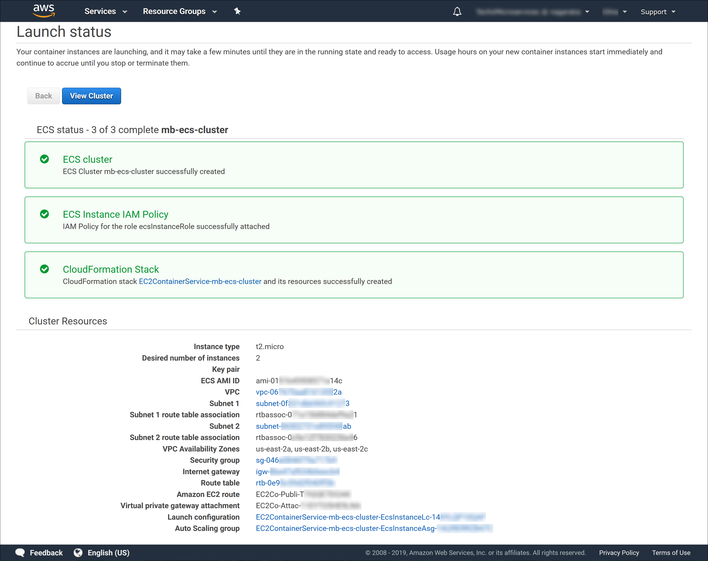
The resources that the wizard creates are listed in the Cluster Resources section.
Choose View Cluster.
The details page for the mb-ecs-cluster opens. The Status field shows a value of ACTIVE.
Choose the ECS Instances tab.
The two EC2 instances for the cluster (which the wizard created) are listed.
Note: It might take a few minutes for the two EC2 instances to show in the list. If you do not see both instances, choose Refresh.
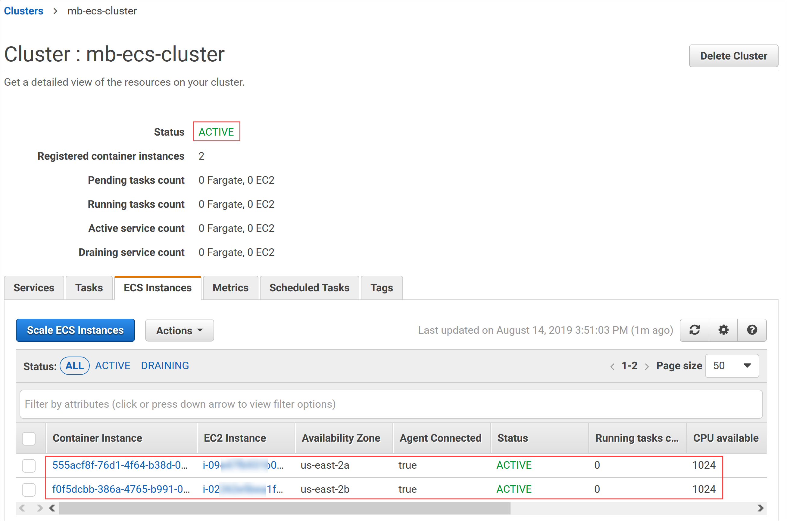
Choose the Tasks tab.
No tasks are deployed to the cluster yet. You will create one next.
Task 4.2: Creating a task definition for the application container image
A task definition is a list of configuration settings for how to run a Docker container on Amazon ECS. It tells Amazon ECS various kinds of information, such as:
- What container image to run
- How much CPU and memory the container needs
- What ports the container listens to traffic on
In this subtask, you will create a task definition for the container image of the message board application.
In the navigation pane of the Amazon ECS console browser tab, choose Task Definitions.
Choose Create new Task Definition.
In the Select launch type compatibility page, choose the EC2 card.
Choose Next step.
The Configure task and container definitions page opens.
In the Task Definition Name box, enter
mb-task.Scroll down to Container Definitions and choose Add container.
The Add container window opens.
Configure the following settings.
- Container name:
mb-container - Image: Paste the Image URI of the application container image, which you copied to a text editor in a previous step.
- Memory Limits: Select Hard limit and enter
256. (This setting defines the maximum amount of memory that the container is allowed to use.) - Port mappings > Container port:
3000(This setting specifies the port where the container receives requests. You do not need to enter a value in Host port.)
The Add container window should look similar to the following example:
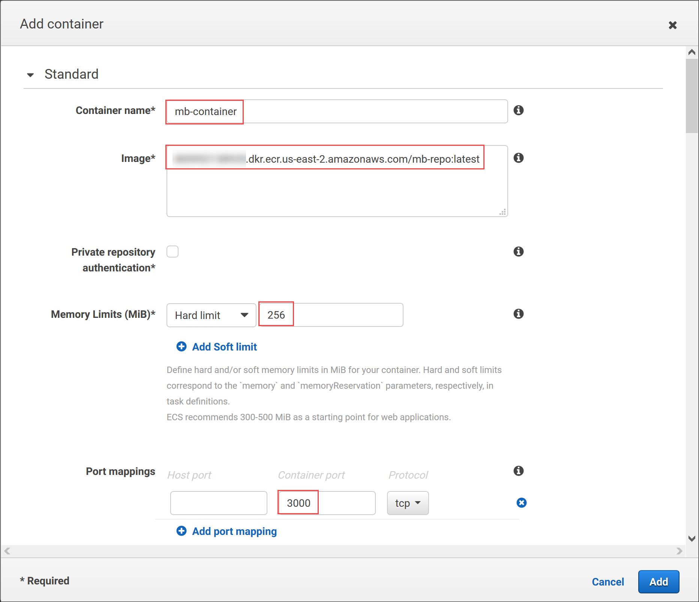
- Container name:
Choose Add.
Scroll down and choose Create. You can ignore any warnings.
A message displays, indicating that the task definition was successfully created. Notice that the definition is automatically assigned the version number of 1.
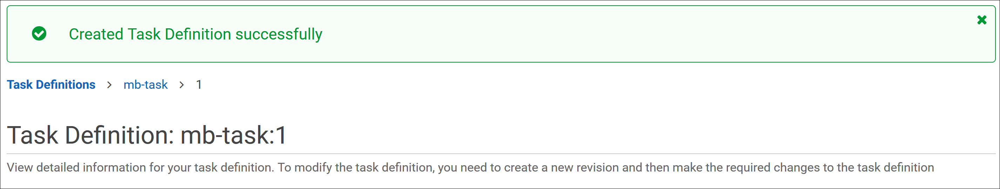
You now have a task definition that tells Amazon ECS how to deploy your application container across the cluster.
Task 4.3: Creating the Application Load Balancer
Next, you will create the Application Load Balancer that distributes incoming requests to the EC2 instances that run in the ECS cluster. This load balancer resides in the same VPC and uses the same security group as the ECS cluster.
In the Amazon ECS console browser tab, choose Services, and then select Compute > EC2.
In the navigation pane, scroll down and select Load Balancers.
Choose Create Load Balancer.
The Select load balancer type page opens.
In the Application Load Balancer card, choose Create.
The Application Load Balancer creation wizard opens.
In Step 1: Configure Load Balancer, configure the following settings.
Name:
mb-load-balancerScroll to the Availability Zones section and enter these settings.
- VPC: Select the Amazon ECS cluster VPC ID. This ID be similar to vpc-nnnnnnnnnn (10.32.0.0/16)
- Availability Zones: Select both Availability Zones.
Choose Next: Configure Security Settings.
In Step 2: Configure Security Settings, you can ignore the warning that your load balancer is not using a secure listener. Choose Next: Configure Security Groups.
In Step 3: Configure Security Groups, configure these settings.
Assign a security group: Select an existing security group
Security Group ID:
- Clear default.
- Select EC2ContainerService-mb-ecs-cluster-EcsSecurityGroup. (This is the security group of your ECS cluster.)
Choose Next: Configure Routing.
In Step 4: Configure Routing, configure the following settings.
Target group: New target group (You want the wizard to create a new target group for the load balancer.)
Name:
mb-load-balancer-target-groupProtocol and Port: Leave these setting at their default values of HTTP and 80. The application expects to be accessed through RESTful HTTP requests.
Expand Advanced health check settings and enter the following settings.
- Healthy threshold:
2(This setting tells the load balancer that the target is considered healthy if it receives two consecutive successful health checks from it.) - Interval:
6(This setting increases the frequency of health checks to once every 6 seconds.)
- Healthy threshold:
Choose Next: Register Targets.
You can skip Step 5: Register Targets because you will register an ECS service as a target in a later step. Choose Next: Review.
In the Review page, make sure that the settings are correct, and then choose Create.
A message should indicate that the load balancer was successfully created.
Choose Close.
The mb-load-balancer is now in the load balancer list.
Wait a few moments, then choose the Refresh icon. The State of the load balancer should change to active.
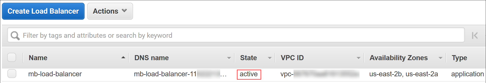
To complete the load balancer configuration, you will modify its security group to open the ports that allow internal communication between the load balancer and the instances in the ECS cluster.
In the Description tab at the bottom, scroll down to the Security section.
Next to Security Groups, choose the security group ID link, which should be similar to sg-nnnnnnnnnn.
The details page of the load balancer's security group opens.
To copy the security group ID to the clipboard, go to the Details tab (in the bottom pane), hover your pointer over the security group ID, and choose the Copy icon.
You will use this ID in a subsequent step.
In the bottom pane, select the Inbound rules tab.
The inbound rules for the security group are displayed.
Choose Edit inbound rules.
The Edit inbound rules dialog window opens.
Choose Add rule.
A new line appears in the rules list so that you can add a new rule. It is already preconfigured for a Custom TCP Rule, which is the type that you want to add.
In the new line, add the following configuration.
- Port Range:
31000-61000 - Source > Custom: Paste the security group ID from the clipboard.
- Port Range:
Choose Save rules.
The security group's inbound rules list shows the new rule that you added.
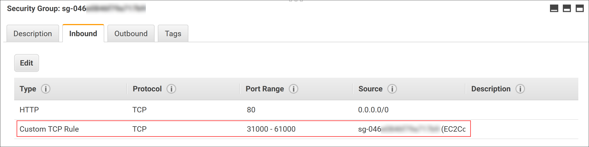
Task 4.4: Deploying the monolith as an ECS service
You have created all the required Amazon ECS infrastructure components. In this subtask, you will deploy the containerized monolithic application to the cluster as an Amazon ECS service.
An ECS service enables you to simultaneously run and maintain a specified number of task definition instances in an ECS cluster. If one of the tasks fails or stops for any reason, the ECS service scheduler launches another task definition instance to replace it. Thus, it will maintain the desired count of tasks that were specified in the service.
You will now create an ECS service for the message board application's task definition by using the Amazon ECS console.
In the AWS Management Console browser tab, choose Services, and select Containers > Elastic Container Service.
In the navigation pane, choose Task Definitions.
In the Task Definition list, choose the mb-task link.
A page opens with the available revisions of the task definition.
Select mb-task:1 and choose Actions > Create Service.
In Step 1: Configure service, configure these settings.
- Launch type: EC2 (You are running the containerized application directly on a cluster of EC2 instances.)
- Service name:
mb-ecs-service - Service type: REPLICA (This setting establishes a scheduling strategy that places and maintains the desired number of tasks across the ECS cluster.)
- Number of tasks:
1(Normally, to take full advantage of the cluster, you would enter a higher number, depending on the request load that you expect. However, to keep things simple in this exercise, you specify that you want to launch and maintain one task on the cluster at all times.)
Choose Next step.
In Step 2: Configure network, configure the following settings.
- Load balancer type: Application Load Balancer (You want the tasks in your service to be load balanced by the mb-load-balancer that you set up earlier)
- Service IAM role: Create new role
- Load balancer name: mb-load-balancer
- Container name:port: This field is already populated with the correct container information that is associated with the task definition. Choose Add to load balancer. (This setting will associate the container with one of the load balancer's listeners.)
- Production listener port: 80:HTTP (This setting associates the container with the load balancer listener for HTTP traffic on port 80)
- Target group name: mb-load-balancer-target-group
Choose Next step.
In Step 3: Set Auto Scaling (optional), choose Next step. You do not want to configure any additional automatic scaling.
In the Review page, make sure that the settings are correct and choose Create Service.
The Launch Status page opens, and shows the tasks that the wizard performs.
Wait until all tasks display check marks, which indicate that they are complete.
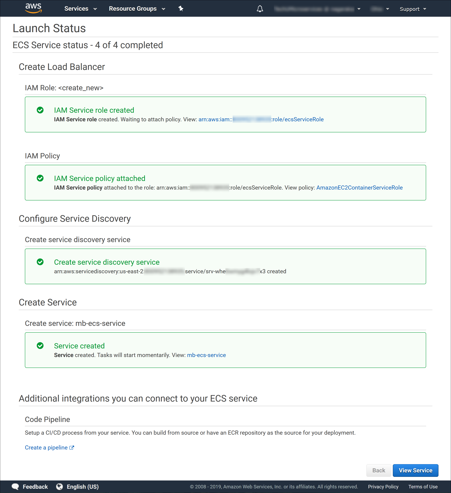
To open the details page for mb-ecs-service, choose View Service.
The Tasks tab shows that there is now one task that is running the container, with a status of ACTIVATING.
After a few moments, choose Refresh. The task's Last status should show: RUNNING.
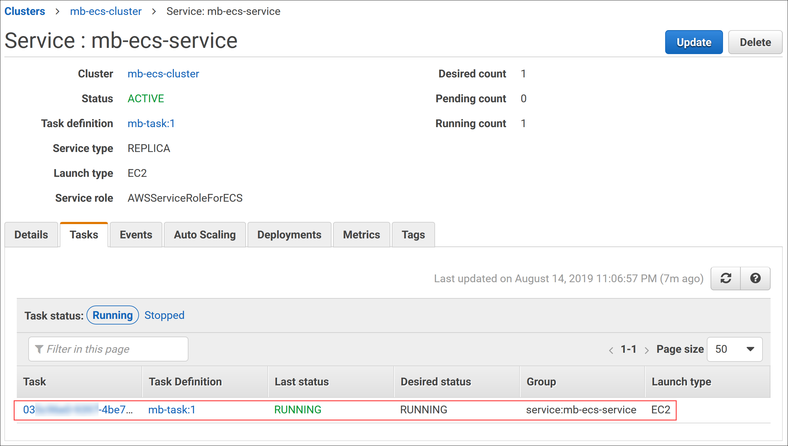
You have successfully deployed the containerized monolith as an ECS service into the cluster.
Task 4.5: Testing the containerized monolith
You will now validate your deployment by testing the RESTful API methods of the message board application from a web browser.
First, you will find and record the URL of the load balancer.
In the Amazon ECS console browser tab, choose Services, and select Compute > EC2.
In the navigation pane, scroll down and choose Load Balancers.
The load balancer list shows the mb-load-balancer.
In the Description tab at the bottom, go to DNS name and choose the Copy icon.
Paste the DNS name value into a text editor, and label it
Load Balancer DNS Name. You will use this value multiple times in later steps.Open a new browser tab, paste the DNS name into the address bar, and press ENTER.
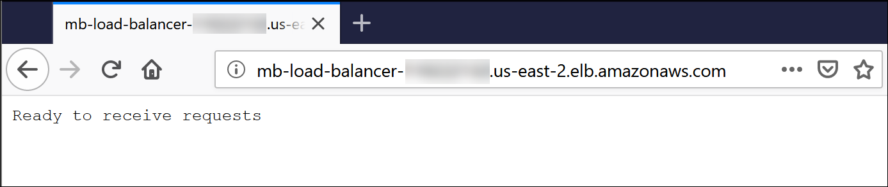
The page opens with the message Ready to receive requests. This message is returned by the message board application when no resource path is included in the GET request.
Troubleshooting tip: If you get a server-related HTTP error code, wait a few moments and then try again. It might take a few minutes for the container to register as healthy and begin receiving traffic.
In the browser address bar, add
/apito the end of the URL and press ENTER.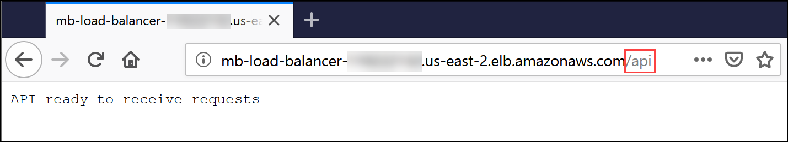
The application should return the message API ready to receive requests.
Test the retrieval of all users in the database. In the browser address bar, add
/usersto the end of the URL and press ENTER.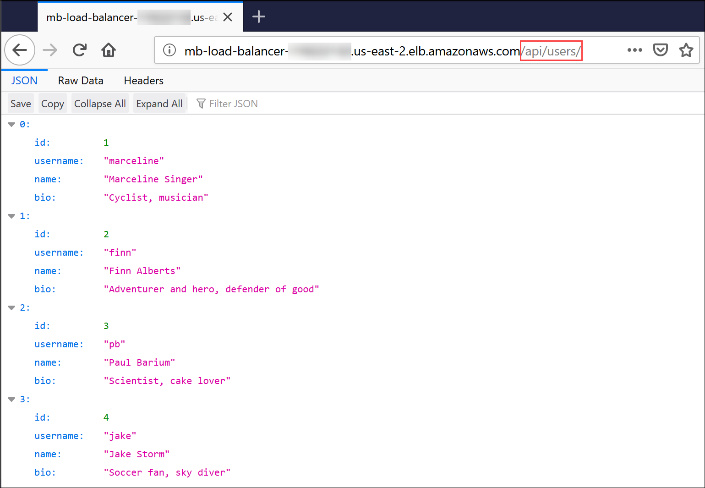
The application returns a JSON object that lists the four users in the database.
Retrieve the information for the first user in the database. In the browser address bar, add
/1to the end of the URL and press Enter.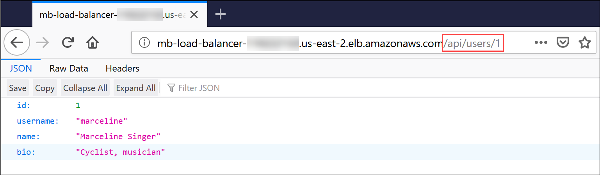
The application returns a JSON object that contains the information for Marcerline Singer, who is the first user in the database.
Next, you will retrieve all the threads in the database. In the browser address bar, change the URI after the load balancer DNS name to
/api/threadsand press ENTER.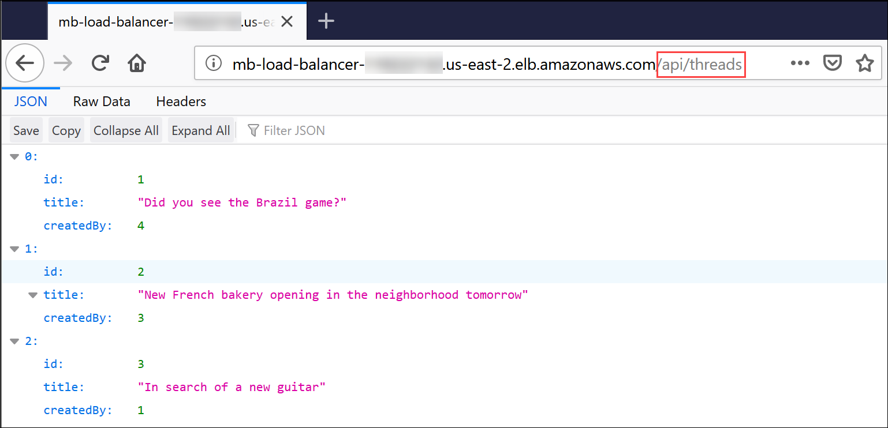
The application returns a JSON object that contains the three threads in the database.
Finally, retrieve the posts for the second thread in the database. In the browser address bar, change the URI after the load balancer DNS name to
/api/posts/in-thread/2and press ENTER.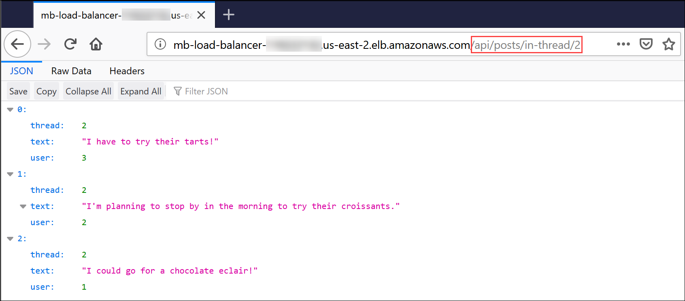
The application returns a JSON object that contains the posted messages for the second thread in the database. The messages are bakery-related.
Optionally, invoke other resource paths that the application can serve. When you are finished testing, close the application browser tab.
You have now successfully containerized the monolithic message board application and deployed it to an Amazon ECS environment.
Task 5: Refactoring the monolith
In this task, you will break the containerized monolithic message board application into several interconnected microservices. You will then push each microservice image to an Amazon ECR repository. Each microservice performs a single business capability of the application, and can be scaled independently of the other microservices. The application is divided into the following microservices, which represent the top-level classes of objects that the application's API serves:
- Users microservice – A service for all user-related REST paths (
/api/users/*) - Threads microservice – A service for all thread-related REST paths (
/api/threads/*) - Posts microservice – A service for all post-related REST paths (
/api/posts/*)
To expedite the refactoring, a microservices version of the application is provided to you in the 3-containerized-microservices folder of your AWS Cloud9 environment.
The steps that you perform in this task are:
- Review the refactored microservices application
- Provision an Amazon ECR repository for each microservice
- Build and push the images for each microservice
Task 5.1: Reviewing the refactored microservices application
In this subtask, you will Take a few minutes to review the files to help you understand the changes that were made to refactor the application into microservices.
Switch to the AWS Cloud9 IDE browser tab.
In the Environment pane on the left, expand the 3-containerized-microservices folder.
This folder now has three separate subfolders named posts, threads, and users, which represent the three application microservices. Each subfolder contains the implementation files for the corresponding microservice.
Expand the posts, threads, and users subfolders.
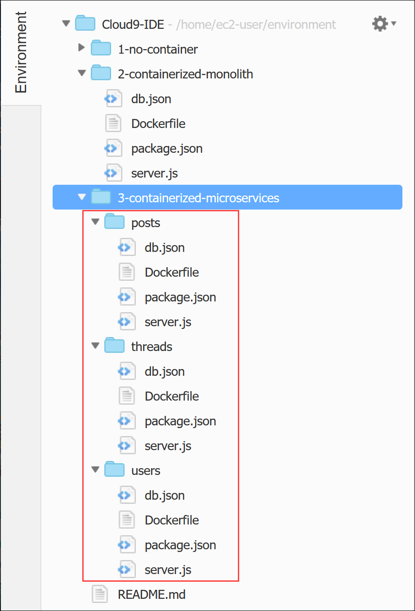
Notice that each subfolder contains a copy of the same application files as those of the containerized monolith application. The db.json, Dockerfile, and package.json files in each subfolder are identical to their containerized monolith counterparts. The server.js file is the only file that changed from the refactoring.
In the users subfolder, open server.js in an editor tab by double-clicking it.
Lines 13 through 20 differ from the containerized monolith version in that the program defines only the API methods and implementations that are related to the users resource paths.
In the Threads subfolder, open server.js in an editor tab by double-clicking it.
Lines 13 through 20 differ from the containerized monolith version in that the program defines only the API methods and implementations that are related to the threads resource paths.
In the posts subfolder, open server.js in an editor tab by double-clicking it.
Lines 13 through 21 differ from the containerized monolith version in that the program defines only the API methods and implementations that are related to the posts resource paths.
In summary, the only change that is required to refactor the application is to split the RESTful API method handlers in the monolithic version of server.js into three separate server.js files. Each individual server.js file contains a relevant subset of the API method handlers.
Task 5.2: Provisioning an Amazon ECR repository for each microservice
Similar to what you did for the containerized monolith version, you will now create an Amazon ECR repository for each application microservice.
You will now create a repository for the Users, Threads, and Posts microservice container images.
To open the Amazon ECR console, go to the AWS Management Console browser tab, choose Services, and then select Containers > Elastic Container Registry.
Choose Create repository.
In Repository name, enter
mb-users-repo.Choose Create repository. A message is displayed at the top of the page indicating that the repository was successfully created.
Repeat the previous steps to create two repositories for the other two microservices, with the following repository information.
- Threads repository name:
mb-threads-repo - Posts repository name:
mb-posts-repo
When you have created the repositories for all three microservices, the Repositories list should look like the following example:
- Threads repository name:
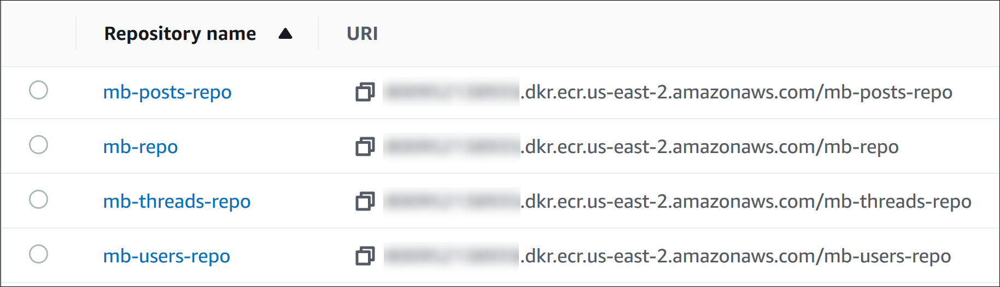
Task 5.3: Building and pushing the images for each microservice
Next, you will build each microservice container image and push it to its corresponding repository. In the following steps, you will use the ready-to-use commands that are provided by the Amazon ECR console to complete the task.
Building and pushing the Users microservice
You will start with the container image for the Users microservice.
Switch to the AWS Cloud9 IDE browser tab.
In the terminal tab, change the directory to the 3-containerized-microservices/users folder by entering the following command:
xxxxxxxxxxcd ~/environment/3-containerized-microservices/usersSwitch to the Amazon ECR console browser tab.
In the Repositories list, select mb-users-repo.
At the top of the page, choose View push commands.
The Push commands for mb-users-repo pop-up window opens.
First, you will build the Docker image for the microservice.
In the Push commands for mb-users-repo window, copy the second command to the clipboard by selecting the Copy icon next to it. The command should look like:
xxxxxxxxxxdocker build -t mb-users-repo .Note: Make sure to include the period (.) at the end of the command.
Switch to the AWS Cloud9 IDE browser tab.
In the terminal tab, paste the copied command and run it by pressing ENTER.
When the command is finished, you should see the messages Successfully built nnnnnnnnnn and Successfully tagged mb-users-repo:latest.
Next, you will tag the image with the repository URI so that it can be pushed the repository.
Switch to the Amazon ECR console browser tab.
In the Push commands for mb-users-repo window, copy the third command to the clipboard by selecting the Copy icon next to it. The command should look like:
xxxxxxxxxxdocker tag mb-users-repo:latest 1234567890.dkr.ecr.us-east-2.amazonaws.com/mb-users- repo:latestSwitch to the AWS Cloud9 IDE browser tab.
In the terminal tab, paste the copied command and run it by pressing ENTER.
The command does not return anything if it completed successfully.
Finally, push the container image to the microservice repository.
Switch to the Amazon ECR console browser tab.
In the Push commands for mb-users-repo window, copy the fourth command to the clipboard by selecting the Copy icon next to it. The command should look like:
xxxxxxxxxxdocker push 1234567890.dkr.ecr.us-east-2.amazonaws.com/mb-users-repo:latestSwitch to the AWS Cloud9 IDE browser tab.
In the terminal tab, paste the copied command and run it by pressing ENTER.
The command outputs several messages as each layer of the image is pushed to the repository.
You will now verify that the image was successfully uploaded.
Switch to the Amazon ECR console browser tab and close the Push commands for mb-users-repo pop-up window.
Choose the Refresh icon.
In the Images list, you see the container image that you pushed identified by the latest tag.
Record the Image URI. In the Images list, locate the Image URI of the latest version of the image and choose the Copy icon next to it.
Paste the value in a text editor and label it as
Users Image URI. You will use it in a later step.
Building and pushing the Threads microservice
Next, you will build and push the container image for the Threads microservice.
Switch to the AWS Cloud9 IDE browser tab.
In the terminal tab, change the directory to the 3-containerized-microservices/threads folder by entering the following command:
xxxxxxxxxxcd ~/environment/3-containerized-microservices/threadsSwitch to the Amazon ECR console browser tab.
In the navigation pane, choose Repositories and in the Repositories list, select mb-threads-repo.
Choose View push commands.
The Push commands for mb-threads-repo pop-up window opens.
First, you will build the Docker image for the microservice.
In the pop-up window, copy the second command by selecting the Copy icon. The command should look like:
xxxxxxxxxxdocker build -t mb-threads-repo .Note: Make sure to include the period (.) at the end of the command.
Switch to the AWS Cloud9 IDE browser tab.
In the terminal tab, paste the copied command and run it.
When the command is finished, you see the messages Successfully built nnnnnnnnnn and Successfully tagged mb-threads-repo:latest.
Next, you will tag the image with the repository URI so that it can be pushed the repository.
Switch to the Amazon ECR console browser tab.
In the pop-up window, copy the third command by selecting the Copy icon. The command should look like:
xxxxxxxxxxdocker tag mb-threads-repo:latest 1234567890.dkr.ecr.us-east-2.amazonaws.com/mb-threads-repo:latestSwitch to the AWS Cloud9 IDE browser tab.
In the terminal tab, paste the copied command and run it.
The command does not return anything if it completed successfully.
Finally, you will push the container image to the microservice repository.
Switch to the Amazon ECR console browser tab.
In the pop-up window, copy the fourth command by selecting the Copy icon. The command should look like:
xxxxxxxxxxdocker push 1234567890.dkr.ecr.us-east-2.amazonaws.com/mb-threads-repo:latestSwitch to the AWS Cloud9 IDE browser tab.
In the Terminal tab, paste the copied command and run it.
The command outputs several messages as each layer of the image is pushed to the repository.
You will now verify that the image was successfully uploaded.
Switch to the Amazon ECR console browser tab and close the Push commands for mb-threads-repo pop-up window.
Choose the Refresh icon.
In the Images list, you should see the container image that you pushed, which can be identified by the latest tag.
Record the Image URI. In the Images list, go to the Image URI for latest version and choose the Copy icon.
Paste the value in a text editor and label it as
Threads Image URI. You will use it in a later step.
Building and pushing the Posts microservice
Lastly, you will build and push the container image for the Posts microservice.
Switch to the AWS Cloud9 IDE browser tab.
In the terminal tab, change the directory to the 3-containerized-microservices/posts folder by entering the following command:
xxxxxxxxxxcd ~/environment/3-containerized-microservices/postsSwitch to the Amazon ECR console browser tab.
In the navigation pane, choose Repositories.
In the Repositories list, select mb-posts-repo.
Choose View push commands.
The Push commands for mb-posts-repo pop-up window opens.
First, you will build the Docker image for the microservice.
In the pop-up window, copy the second command. The command should look like:
xxxxxxxxxxdocker build -t mb-posts-repo .Note: Make sure that you include the period (.) at the end of the command.
Switch to the AWS Cloud9 IDE browser tab.
In the terminal tab, paste and run the copied command.
When the command is finished, you see the messages Successfully built nnnnnnnnnn and Successfully tagged mb-posts-repo:latest.
Next, you will tag the image with the repository URI so that it can be pushed the repository.
Switch to the Amazon ECR console browser tab.
In the pop-up window, copy the third command. The command should look like:
xxxxxxxxxxdocker tag mb-posts-repo:latest 1234567890.dkr.ecr.us-east-2.amazonaws.com/mb-posts-repo:latestSwitch to the AWS Cloud9 IDE browser tab.
In the Terminal tab, paste and run the copied command.
The command does not return anything if it completed successfully.
Finally, you will push the container image to the microservice repository.
Switch to the Amazon ECR console browser tab.
In the pop-up window, copy the fourth command. The command should look like:
xxxxxxxxxxdocker push 1234567890.dkr.ecr.us-east-2.amazonaws.com/mb-posts-repo:latestSwitch to the AWS Cloud9 IDE browser tab.
In the Terminal tab, paste and run the copied command.
The command outputs several messages as each layer of the image is pushed to the repository.
You will now verify that the image was successfully uploaded.
Switch to the Amazon ECR console browser tab.
Close the Push commands for mb-posts-repo pop-up window.
Choose the Refresh icon.
In the Images list, you should see the container image that you pushed, which should have the latest tag.
Record the Image URI. In the Images list, copy the Image URI of the latest version of the image.
Paste the value in a text editor and label it as
Posts Image URI. You will use it in a later step.You have successfully built container images for the microservices in your application and pushed them to Amazon ECR.
Task 6: Deploying the containerized microservices
In this task, you will deploy the containerized microservices message board application to the same ECS cluster that you used for the containerized monolith. You will also use the same Application Load Balancer from before. However, in this task, you will configure it to route requests to different target groups (one for each microservice container) based on the request URI path.
The following diagram shows the deployment architecture of the containerized microservices application. It also displays the resources that you will create.
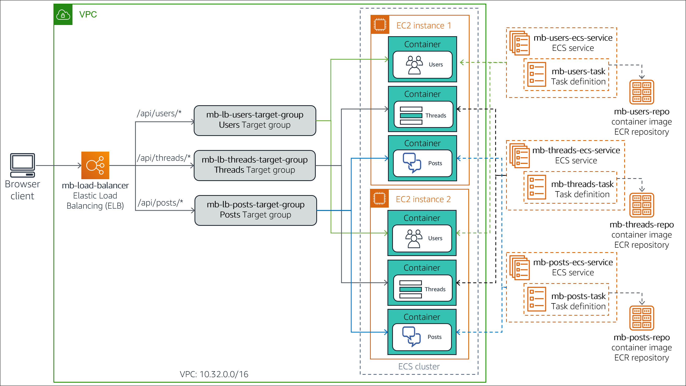
The steps that you perform in this task are:
- Create a task definition for each microservice.
- Configure the Application Load Balancer
- Deploy the microservices as ECS services.
- Validate the deployment.
Task 6.1: Creating a task definition for each microservice
Because the microservices in the application are intended to run independently of each other, they each require their own task definition. In this subtask, you will create three task definitions that run the container image of each individual microservice.
Creating a task definition for the Users container
You will start by creating the task definition for the Users microservice container.
In the navigation pane of the Amazon ECR console, choose Task definitions, and then choose Create new Task Definition.
Note: You may need to expand the menu in the navigation pane to find Task Definitions.
In Step 2: Select launch type compatibility page, select the EC2 card.
Choose Next step.
In Step 2: Configure task and container definitions, configure the following settings:
Task Definition Name:
mb-users-taskScroll to the Container Definitions section and choose Add container. In the Add container page, enter these settings.
- Container name:
mb-users-container - Image: Paste the Users Image URI that you copied to a text editor in a previous step.
- Memory Limits: Make sure that Hard limit is selected, and enter
256. (This defines the maximum amount of memory that the container is allowed to use.) - Port mappings > Container port:
3000(This specifies the port on which the container receives requests.)
- Container name:
Choose Add.
Scroll-down and choose Create.
A message indicates that the task definition was successfully created. Notice that the definition is automatically assigned the version number of 1.
Creating a task definition for the Threads container
Next, you will create the task definition for the Threads microservice container.
In the navigation pane, select Task Definitions and choose Create new Task Definition.
In Step 1: Select launch type compatibility, select the EC2 card.
Choose Next step.
In Step 2: Configure task and container definitions, configure the following settings.
Task Definition Name:
mb-threads-task.Scroll to the Container Definitions section and choose Add container. In the Add container page that opens, enter these settings.
- Container name:
mb-threads-container - Image: Paste the Threads Image URI that you copied to a text editor.
- Memory Limits: Make sure that Hard limit is selected, and enter
256. - Port mappings > Container port:
3000
- Container name:
Choose Add.
Scroll-down and choose Create.
A message indicates that the task definition was successfully created. The definition is automatically assigned the version number of 1.
Creating a task definition for the Posts container
Lastly, you will now create the task definition for the Posts microservice container.
In the navigation pane, select Task Definitions and then choose Create new Task Definition.
In Step 1: Select launch type compatibility, select the EC2 card.
Choose Next step.
In Step 2: Configure task and container definitions, configure these settings.
Task Definition Name:
mb-posts-taskScroll down to the Container Definitions section and choose Add container. In the Add container page, enter these settings.
- Container name:
mb-posts-container - Image: Paste the Posts Image URI that you copied.
- Memory Limits: Make sure that Hard limit is selected, and enter
256 - Port mappings > Container port:
3000 - Choose Add.
- Container name:
Scroll down and choose Create.
A message indicates that the task definition was successfully created. The definition is automatically assigned the version number of 1.
Task 6.2: Configuring the Application Load Balancer
In this subtask, you will create a new load balancer target group for each microservice so that requests can be routed to their container. You also configure the load balancer listener rule to forward requests to the correct target group, based on the request URI path.
Creating a target group for the Users microservice
In the Amazon ECS console browser tab, choose Services, and then select Compute > EC2.
In the navigation pane, scroll down and choose Target Groups.
Choose Create target group.
In Step 1: Specify group details, configure the following settings.
Target group name:
mb-lb-users-target-groupVPC: Select the load balancer VPC ID. It should be similar to vpc-nnnnnnnnnn (10.32.0.0/16).
Scroll down, expand Advanced health check settings, and enter these settings.
- Healthy threshold:
2(This setting tells the load balancer that if it receives two consecutive successful health checks from a target, the target is considered healthy) - Interval:
6(This increases the frequency of health checks to once every 6 seconds)
- Healthy threshold:
Choose Next.
In Step 2: Register targets, choose Create target group.
A window opens with a message that the target group was successfully created.
Close the message window.
The mb-lb-users-target-group appears in the target group list.
Creating a target group for the Threads microservice
Next, you will create a target group for the Threads microservice.
Choose Create target group and in Step 1: Specify group details, configure these settings.
Target group name:
mb-lb-threads-target-groupVPC: Select the load balancer VPC ID. It should be similar to vpc-nnnnnnnnnn (10.32.0.0/16)
In the Advanced health check settings section, enter these settings.
- Healthy threshold:
2 - Interval:
6
- Healthy threshold:
Choose Next.
In Step 2: Register targets, choose Create target group.
A window opens with a message that the target group was successfully created.
Close the message window.
The mb-lb-threads-target-group appears in the target group list.
Creating a target group for the Posts microservice
Lastly, you will create a target group for the Posts microservice.
Choose Create target group and configure these settings.
Target group name:
mb-lb-posts-target-groupVPC: Select the load balancer VPC ID. It should be similar to vpc-nnnnnnnnnn (10.32.0.0/16).
In the Advanced health check settings section, enter these settings.
- Healthy threshold:
2 - Interval:
6
- Healthy threshold:
Choose Next, and then choose Create target group.
A window opens with a message that the target group was successfully created.
Close the message window.
The mb-lb-posts-target-group appears in the target group list.
Creating listener rules for the load balancers
You have created the target groups for each microservice. You will modify the listener rules for the load balancer. These rules will route traffic to each load balancer, based on the request URI path.
Open the details page for mb-load-balancer by going to the navigation pane and selecting Load Balancers.
In the bottom pane, choose the Listeners tab.
In the line for the HTTP:80 listener, choose View/edit rules.
The rules editor opens.
You will now create a new rule to forward a request to the Users target group if the request URI matches the pattern
/api/users*.In the tool bar at the top of the editor, add a new rule by choosing the Add rules (+) icon.
An Insert Rule line appears in the rules list.
Choose Insert Rule.
A rules box appears allowing you to add an IF condition and a THEN action.
Configure the following settings for this rule.
- Add condition: Path
- is > Value:
/api/users* - Add action: Forward to
- Forward to > Target group: mb-lb-users-target-group
The rules box should look like the following example:
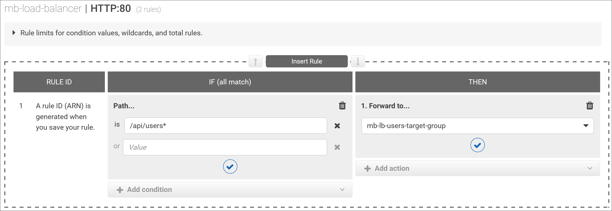
Choose Save.
The rule is added to the list as rule 1.
You will now create a rule to forward a request to the Threads target group if the request URI matches the pattern
/api/threads*.In the line below rule 1, choose Insert Rule.
The rules editor opens.
Configure the following settings for this rule.
- Add condition: Path
- is > Value:
/api/threads* - Add action: Forward to**
- Forward to > Target group: mb-lb-threads-target-group
Choose Save.
The rule is added to the list as rule 2.
You will now create a new rule to forward a request to the Posts target group if the request URI matches the pattern
/api/posts*.In the line below rule 2, choose Insert Rule.
In the rules editor, configure these settings:
- Add condition: Path
- is > Value:
/api/posts* - Add action: Forward to
- Forward to > Target group: mb-lb-posts-target-group
Choose Save.
The rule is added to the list as rule 3.
Now, you will create a new rule to forward a request to the Users target group if the request URI matches the patterns of
/or/api. You could select any of the application's target groups because their corresponding microservice can handle both types of requests.In the line below rule 3, choose Insert Rule.
In the rules editor, configure these settings.
- Add condition: Path
- is > Value:
/ - or > Value:
/api - Add action: Forward to
- Forward to > Target group: mb-lb-users-target-group
Choose Save.
The rule is added to the list as rule 4.
Lastly, you will change the action for the last (default) rule so that any other request URI returns an error page with the message Invalid request.
In the tool bar at the top, choose the Edit rules (pencil) icon.
The rules editor switches to edit mode.
Scroll to the last rule and choose the Edit Rule (pencil) icon.
In the rules editor, configure these settings.
- Then: Delete the existing Forward to action by choosing the Delete (trashcan) icon.
- Add action: Return fixed response
- Response code:
200 - Response body:
Invalid request
The rules editor should look like this example:

Choose Update.
A message indicates that the rule was successfully updated.
The final listener rules for the load balancer should look like this example:
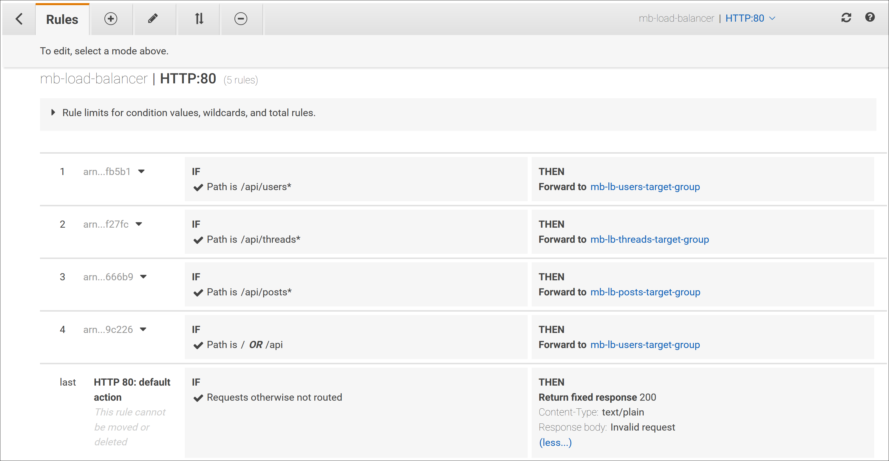
To return to the load balancer details page, choose the Back arrow icon (in the top-left area of the window).
You have completed the required changes to the load balancer configuration.
Task 6.3: Deploying the microservices as ECS services
In this subtask, you will deploy the three microservices to the cluster as ECS services.
Creating an ECS service for Users
You will now create an ECS service for the Users microservice task definition.
In the Amazon EC2 console browser tab, choose Services, and then select Containers > Elastic Container Service.
In the clusters list, choose mb-ecs-cluster.
In the Services tab, open the Create Service wizard by choosing Create.
In Step 1: Configure service, configure the following settings.
- Launch type: EC2 (You are running the containerized microservice directly on a cluster of EC2 instances.)
- Task Definition > Family: mb-users-task
- Service name:
mb-users-ecs-service - Service type: REPLICA (This setting establishes a scheduling strategy that places and maintains the desired number of tasks across the ECS cluster)
- Number of tasks:
1(For this exercise, you want to launch and maintain one task on the cluster at all times)
Choose Next step.
In Step 2: Configure network, configure the following settings.
- Load balancer type: Application Load Balancer (You want the tasks in your service to be load balanced by the mb-load-balancer that you set up)
- Service IAM role: ecsServiceRole
- Load balancer name: mb-load-balancer
- Container to load balance: Add to load balancer
- Production listener port: 80:HTTP (You are associating the container with the load balancer listener that listens for HTTP traffic on port 80)
- Target group name: mb-lb-users-target-group
Choose Next step.
In Step 3: Set Auto Scaling (optional), choose Next step. You do not want to configure any additional automatic scaling.
In the Review page, make sure that the settings are correct and choose Create Service.
The Launch Status page opens, and shows the tasks that the wizard performs.
Wait until all tasks display a check mark to indicate that they are complete.
Choose View Service.
The details page for mb-users-ecs-service opens. The Tasks tab shows that there is now one task running the container.
After a few moments, choose the Refresh button.
The task's Last status should show a value of RUNNING.
Creating an ECS service for Threads
Next, you will create an ECS service for the Threads microservice task definition.
To return to the cluster details page, in the breadcrumb trail at the top of the page, choose mb-ecs-cluster.
In the Services tab, choose Create.
In Step 1: Configure service, configure the following settings.
- Launch type: EC2
- Task Definition > Family: mb-threads-task
- Service name:
mb-threads-ecs-service - Service type: REPLICA
- Number of tasks:
1
Choose Next step.
In Step 2: Configure network, configure the following settings.
- Load balancing > Load balancer type: Application Load Balancer
- Load balancer name: mb-load-balancer
- Container to load balance: Add to load balancer
- Production listener port: 80:HTTP
- Target group name: mb-lb-threads-target-group
Choose Next step.
In Step 3: Set Auto Scaling (optional) page, click Next step.
In the Review page, make sure that the settings are correct and choose Create Service.
The Launch Status page opens and shows the tasks that the wizard performs.
Wait until all tasks display a check mark to indicate that they are complete.
Choose View Service.
The details page for mb-threads-ecs-service opens. The Tasks tab shows that one task is running the container.
After a few moments, choose Refresh. The task's Last status shows a value of RUNNING.
Creating an ECS service for Posts
Lastly, create an ECS service for the Posts microservice task definition.
Return to the cluster details page for mb-ecs-cluster.
In the Services tab, choose Create.
In Step 1: Configure service, configure the following settings.
- Launch type: EC2
- Task Definition > Family: mb-posts-task
- Service name:
mb-posts-ecs-service - Service type: REPLICA
- Number of tasks:
1
Choose Next step.
In Step 2: Configure network, configure the following settings.
- Load balancing > Load balancer type: Application Load Balancer
- Load balancer name: mb-load-balancer
- Container to load balance: Add to load balancer
- Production listener port: 80:HTTP
- Target group name: mb-lb-posts-target-group
Choose Next step.
In Step 3L Set Auto Scaling (optional), choose Next step.
In the Review page, make sure that settings are correct and choose Create Service.
The Launch Status page opens and shows the tasks that the wizard performs.
Wait until all tasks display a check mark to indicate that they are complete.
Choose View Service.
The details page for mb-posts-ecs-service opens. The Tasks tab shows that one task is running the container.
After a few moments, choose Refresh.
The task's Last status should show a value of RUNNING.
Return to the cluster details page for mb-ecs-cluster.
The three new services that you created are now in the Services list.
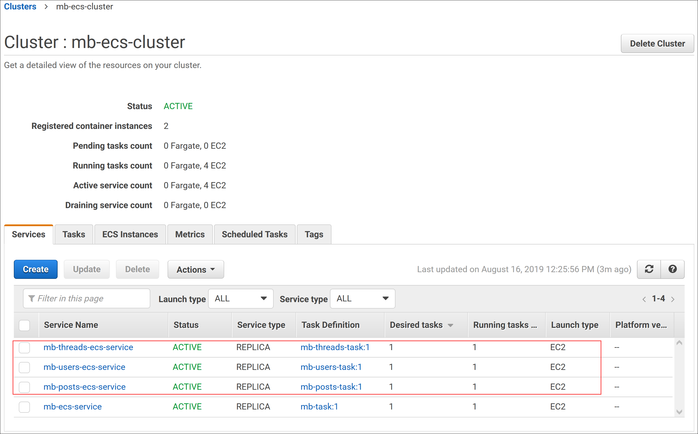
It should only take a few seconds for all your services to start. Double-check that all services and tasks are running and healthy before you proceed.
Task 6.4: Validating the deployment
You will now test the RESTful API methods of the message board application from a web browser. You will also validate that the microservices-based implementation works correctly.
First, you will shut down the ECS service for the containerized monolith version of the application. You do not want it to serve any requests.
In the Services list, select mb-ecs-service, and choose Update.
The Update Service wizard opens.
For Number of tasks, change the value to
0. (This setting instructs Amazon ECS to not run any tasks for the service.)Choose Skip to review.
In the Review page, choose Update Service.
The Launch Status page opens with a message that the service has been updated.
Choose View Service.
The details page for mb-ecs-service opens. The Deployments tab shows that the Running count for the service is 0.
Note: If you do not see the change immediately, wait a few seconds and choose Refresh.
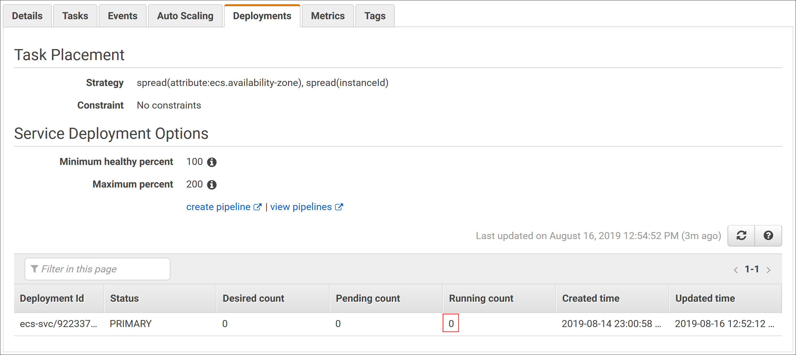
Open a new browser tab, paste the Load Balancer DNS Name that you recorded earlier, and press ENTER.
This action returns the message Ready to receive requests. The application returns this message when no resource path is included in the GET request. Recall from the listener rules configuration that this type of request is sent to the Users microservice.
Add
/apito the end of the URL and press ENTER.The application—specifically, the Users microservice—returns the message API ready to receive requests.
Test the retrieval of all users in the database. Add
/usersto the end of the URL and press ENTER.The Users microservice returns a JSON object that lists the four users in the database.
Retrieve the information for the first user in the database. Add
/1to the end of the URL and press ENTER.The Users microservice returns a JSON object that contains the information for Marcerline Singer, who is the first user in the database.
Next, retrieve all the threads in the database. Change the URI after the load balancer DNS name to
/api/threadsand press ENTER.The Threads microservice returns a JSON object that contains all three threads in the database.
Retrieve the posts for the second thread in the database. Change the URI after the load balancer DNS name to
/api/posts/in-thread/2and press ENTER.The Posts microservice returns a JSON object that contains the posted messages for the second thread (which are bakery-related) in the database.
Finally, test the submission of a request with an invalid URI. Change the URI after the load balancer DNS name to
/xyzand press ENTER.The request is forwarded to default handler in the load balancer's listener rules, which returns the message Invalid request.
You have successfully converted a monolithic Node.js application to a microservices architecture. The original application ran, without containerization, directly on an instance. In contrast, microservices-based application is deployed in a containerized environment that is orchestrated by Amazon ECS.
Submitting your work
At the top of these instructions, choose Submit to record your progress and when prompted, choose Yes.
If the results don't display after a couple of minutes, return to the top of these instructions and choose Grades
Tip: You can submit your work multiple times. After you change your work, choose Submit again. Your last submission is what will be recorded for this lab.
To find detailed feedback on your work, choose Details followed by View Submission Report.
Lab complete
Congratulations! You have completed the lab.
Choose End Lab at the top of this page, and then select Yes to confirm that you want to end the lab.
A panel indicates that DELETE has been initiated... You may close this message box now.
Select the X in the top right corner to close the panel.
©2020 Amazon Web Services, Inc. and its affiliates. All rights reserved. This work may not be reproduced or redistributed, in whole or in part, without prior written permission from Amazon Web Services, Inc. Commercial copying, lending, or selling is prohibited.